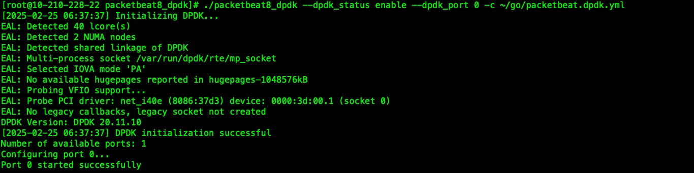

介绍
Packetbeat 是一款开源的网络数据包分析工具，由Elastic公司开发并维护。它能够实时捕获和分析网络中的传输数据，主要用于监控和分析应用层协议的数据传输情况，如HTTP、MySQL、PostgreSQL等。通过这种方式，Packetbeat可以帮助用户了解网络性能、追踪应用程序错误以及监控安全事件。
Packetbeat的工作原理
- 数据抓取：Packetbeat使用libpcap库（在Linux和macOS上）或WinPcap/Npcap（在Windows上）来抓取网络接口上的数据包。
- 协议解码：一旦抓取到数据包，Packetbeat会根据配置解析不同的协议，提取出相关的请求和响应信息。
- 数据发送：处理完的数据会被发送到指定的输出位置，通常是Elasticsearch，也可以是Logstash或者其他兼容的系统。
Packetbeat非常适合用于需要对网络流量进行深度分析的环境，例如企业内部网、云服务提供商、以及任何希望提升其应用性能和安全性的地方。结合Elastic Stack的其他组件（如Kibana），用户可以创建强大的可视化面板，以便更好地理解和管理他们的网络数据。早期的Packetbeat 支持Pf-ring，后来就不再支持了。为Packetbeat添加DPDK（Data Plane Development Kit）支持，可以显著提高其网络数据包处理能力，特别是对于高吞吐量和低延迟要求的场景。DPDK是一个优化了的数据包处理框架，它绕过了操作系统内核协议栈，直接在用户空间处理网络数据包，从而实现了高效的数据传输。Packetbeat依赖gopacket, 建议先读这个文章,作为前置知识, 当让gopacket 支持DPDK, 约等于让Packetbeat支持DPDK 。 https://www.njcx.bid/posts/T4.html
DPDK的安装
CentOS
# yum install -y libpcap-devel gcc gcc-c++ make meson ninja numactl-devel numactl net-tools pciutils
# yum install -y kernel-devel-$(uname -r) kernel-headers-$(uname -r)
Debian + Ubuntu
# apt install -y libpcap-dev gcc g++ make meson ninja-build libnuma-dev numactl net-tools pciutils
# apt install -y linux-headers-$(uname -r)
# wget http://fast.dpdk.org/rel/dpdk-20.11.10.tar.xz
# tar -Jxvf dpdk-20.11.10.tar.xz
# cd dpdk-stable-20.11.10 && meson build && cd build && ninja && ninja install
# export LD_LIBRARY_PATH=/usr/local/lib64:$LD_LIBRARY_PATH
# git clone git://dpdk.org/dpdk-kmods && cd dpdk-kmods/linux/igb_uio
# make
# modprobe uio && insmod igb_uio.ko
# dpdk-devbind.py --status
# ifconfig ens38 down ## 填写实际网卡
# dpdk-devbind.py -b igb_uio 0000:03:00.0(pci-addr) ## 根据实际填写
# echo "vm.nr_hugepages=1024" | tee -a /etc/sysctl.conf
# sysctl -p
Packetbeat 拆解
Packetbeat 7 的函数调用链:
主程序入口 (main.go)
↓
命令行初始化 (cmd/root.go)
↓
Beater初始化与运行 (beater/packetbeat.go)
↓
协议注册和管理 (protos/registry.go)
↓
网络协议处理 (TCP/UDP) (protos/tcp/tcp.go, protos/udp/udp.go)
↓
应用协议解析 (protos/{http,mysql,redis等})
↓
事件发布 (publish/publish.go)
Beater组件 (packetbeat.go):
- 负责整体生命周期管理
- 配置加载和验证
- 网络接口初始化
- 协议处理器注册
type packetbeat struct {
config *conf.C
factory *processorFactory
overwritePipelines bool
done chan struct{}
stopOnce sync.Once
}
协议注册中心 (registry.go):
- 管理所有注册的协议处理器
- 提供协议查找和插件管理功能
- 定义协议插件接口规范
// 协议插件接口
type Plugin interface {
GetPorts() []int
}
type TCPPlugin interface {
Plugin
Parse(pkt *Packet, ...) ProtocolData
ReceivedFin(...) ProtocolData
GapInStream(...) (ProtocolData, bool)
}
type UDPPlugin interface {
Plugin
ParseUDP(pkt *Packet)
}
数据处理流程
- 网卡/pcap读取原始数据包
- TCP/UDP层识别和处理
- 根据端口映射确定应用协议
- 调用对应协议插件进行解析
// 判断数据采集方式
func (s *Sniffer) open() (snifferHandle, error) {
if s.config.File != "" {
return newFileHandler(s.config.File, s.config.TopSpeed, s.config.Loop)
}
switch s.config.Type {
case "pcap":
return openPcap(s.filter, &s.config)
case "af_packet":
return openAFPacket(s.filter, &s.config)
case "dpdk":
return openDpdk(s.filter)
default:
return nil, fmt.Errorf("Unknown sniffer type: %s", s.config.Type)
}
}
func (stream *TCPStream) addPacket(pkt *protos.Packet, tcphdr *layers.TCP) {
// 1. 获取协议处理器
mod := conn.tcp.protocols.GetTCP(conn.protocol)
// 2. 调用协议解析
if len(pkt.Payload) > 0 {
conn.data = mod.Parse(pkt, &conn.tcptuple, stream.dir, conn.data)
}
// 3. 处理FIN标记
if tcphdr.FIN {
conn.data = mod.ReceivedFin(&conn.tcptuple, stream.dir, conn.data)
}
}
事件发布写出
func (p *TransactionPublisher) worker(ch chan beat.Event, client beat.Client) {
for {
select {
case event := <-ch:
// 处理和发布事件
pub, _ := p.processor.Run(&event)
if pub != nil {
client.Publish(*pub)
}
}
}
}
让Packetbeat 支持DPDK
DPDK（Data Plane Development Kit）初始化过程涉及多个步骤，主要是为了准备环境以便高效处理网络数据包。以下是DPDK初始化过程中的一些关键步骤和内容：
- EAL（Environment Abstraction Layer）初始化：这是DPDK初始化的核心部分。EAL提供了对底层硬件资源的抽象，包括内存管理、CPU核心分配、设备识别与初始化等。通过调用rte_eal_init()函数来完成，此过程会解析命令行参数，并设置好运行时环境。
- 内存分配：DPDK需要大量的连续物理内存来存储数据包和执行高效的数据传输。在EAL初始化阶段，会预留一块大页内存（hugepage），用于后续的数据包处理操作。
特别要注意的是：EAL 初始化和 DPDK端口初始化，要在主线程初始化。不然会报错如下：
EAL: Detected 40 lcore(s)
EAL: Detected 2 NUMA nodes
EAL: Error creating '/var/run/dpdk': Operation not permitted
EAL: Cannot create runtime directory
EAL: FATAL: Invalid 'command line' arguments.
EAL: Invalid 'command line' arguments.
由于 Packetbeat 使用了 Cobra, 并且初始化的操作都是在 Cobra的子命令里面完成的, Cobra 的子命令都是非主线程, 如果把DPDK的初始化放到package sniffer 里面, 则会报错如上。所以修改main.go, 把DPDK 的初始化放到 Cobra 的子命令初始化之前.
package main
import (
"github.com/njcx/packetbeat7_dpdk/cmd"
"github.com/njcx/packetbeat7_dpdk/dpdkinit"
"os"
)
var Name = "packetbeat"
func main() {
dpdkinit.DpdkInit()
if err := cmd.RootCmd.Execute(); err != nil {
os.Exit(1)
}
}
由于,我们把DPDK 的初始化放到 Cobra 的子命令初始化之前, 导致我们无法读取 Cobra的命令, 也无法利用后续的配置文件初始化. 所以, 我们可以在里面添加一些命令行参数, 用于DPDK 的初始化, 不能用spf13/pflag 和 标准库flag, 会和后续初始化产生冲突. 简单实现一个命令行参数提取代码 :
package dpdkinit
import (
"fmt"
"os"
"strings"
)
func Parse(key string) (string, error) {
args := os.Args[1:]
for i := 0; i < len(args); i++ {
arg := args[i]
if strings.HasPrefix(arg, "--") {
name := strings.TrimPrefix(arg, "--")
if i+1 >= len(args) {
return "", fmt.Errorf("no value provided for flag: %s", name)
}
return args[i+1], nil
}
if strings.HasPrefix(arg, "-") {
shorthand := strings.TrimPrefix(arg, "-")
if i+1 >= len(args) {
return "", fmt.Errorf("no value provided for flag: %s", shorthand)
}
return args[i+1], nil
}
}
return "", fmt.Errorf("cant find this key: %s", key)
}
DPDK 初始化：
var DPdk *dpdk.DPDKHandle
func DpdkInit() error {
dpdkPort, _ := Parse("dpdk_port")
dpdkStatus, _ := Parse("dpdk_status")
if dpdkStatus == "enable" {
err := dpdk.InitDPDK([]string{})
if err != nil {
return err
}
num16, _ := strconv.ParseUint(dpdkPort, 10, 16)
port := uint16(num16)
h, err := dpdk.NewDPDKHandle(port)
if err != nil {
h.Close()
return err
}
DPdk = h
}
return nil
}
DPDKHandle 已经实现了 snifferHandle的接口，直接赋值：
func openDpdk(filter string) (snifferHandle, error) {
h := dpdkinit.DPdk
err := h.SetBPFFilter(filter)
if err != nil {
h.Close()
return nil, err
}
return h, nil
}
构建：
CGO_CFLAGS="-msse4.2 -fno-strict-aliasing " CGO_LDFLAGS=" -lrte_eal -lrte_mbuf -lrte_mempool -lrte_ethdev -lpcap" go build
执行：
./packetbeat8_dpdk --dpdk_status enable --dpdk_port 0 -c ~/go/packetbeat.dpdk.yml
在配置文件里面标记输入源， 用于后续初始化：
packetbeat.interfaces.device: 0
packetbeat.interfaces.snaplen: 1514
packetbeat.interfaces.type: dpdk
packetbeat.interfaces.buffer_size_mb: 100
运行正常，代码repo 如下， 全文完。
https://github.com/njcx/packetbeat8_dpdk
https://github.com/njcx/packetbeat7_dpdk
https://github.com/njcx/packetbeat6_dpdk
